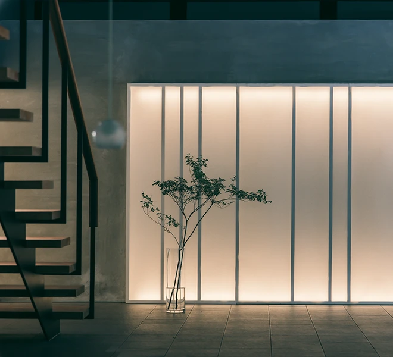
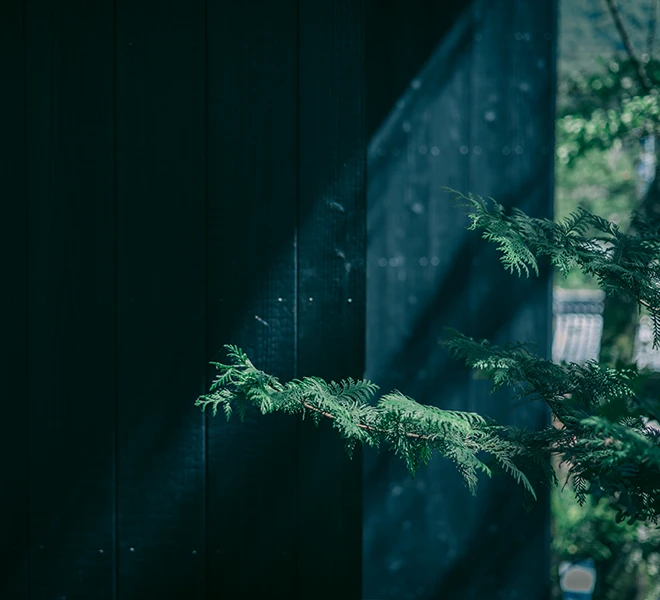

「穗垂亭」是一棟建築面積超過660平方公尺的雙層木製古民家。它由大樑與柱建成，並配有一根巨大的櫻木主柱，散發出一種靜謐庄嚴的威覺，令任何旁觀者都為之震撼。 這棟古舍建於18世紀50年代，距幕府將軍倒台僅有短短幾年時間。 此古舍最初作為居於全日本降雪最多的地區之一——新潟縣十日町市的一戶富裕農戶的家庭住宅。 在此之後，這棟古舍於1987年4月被搬遷到了當前地址的長野縣上林溫泉。
View Detail→建於現在的新潟十日町，是一位富裕農民的住宅
明治
大正
昭和
遷至長野縣上林地區，作為日本雪國鄉村生活博物館
翻新後用作餐廳 "穗垂亭"
供過夜的新建別墅
在穗垂亭歷史悠久的庭院內，我們最近新增設了兩棟豪華私人別墅。這兩棟私人別墅建於2023年3月，各佔地100平方米，可讓您放鬆身心，享受山間的清新空氣。別墅內設有可眺望志賀高原群山的陽台和天然露天溫泉浴池，讓您在入住期間盡享簡約與奢華的完美結合。
View Detail →穗垂亭是一家日式料理店，位於上林溫泉一棟擁有170年悠久歷史的古舍內。古舍在忠於原樣的翻新上融入了現代氣息，我們希望客人在享受美食的同時也能欣賞我們努力營造的氛圍。
View Detail
步行即可到達地獄谷雪猴公園，該公園因一群可愛的日本猕猴（愛稱雪猴）而聞名於世。這些猕猴在溫泉中沐浴，以抵禦冬季的嚴寒。附近的其他景點包括志賀高原和歷史悠久的善光寺。前者在冬季以世界一流的滑雪場而聞名，後者則全年各色宜人，數百年來一直是日本佛教的中心。此外，千萬不要錯過小布施（栗子甜點之鄉）和葛飾北齋博物館等迷人景點。以穗垂亭為大本營，您可以在魅力十足的信州地區享受各式活動和體驗。